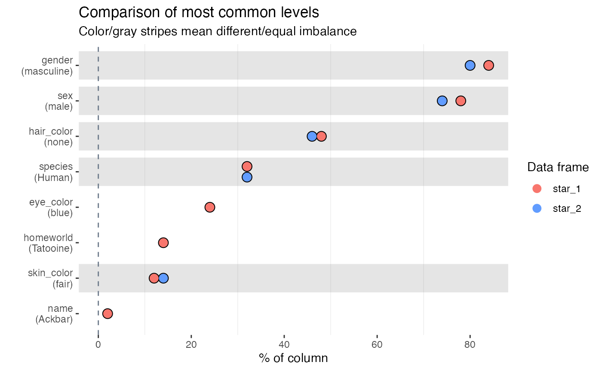

Feature imbalance for categorical columns
Source:vignettes/pkgdown/inspect_imb_examples.Rmd
inspect_imb_examples.Rmd
Illustrative data: starwars
The examples below make use of the starwars and storms data from the dplyr package
For illustrating comparisons of dataframes, use the starwars data and produce two new dataframes star_1 and star_2 that randomly sample the rows of the original and drop a couple of columns.
inspect_imb() for a single dataframe
Understanding categorical columns that are dominated by a single level can be useful. inspect_imb() returns a tibble containing categorical column names (col_name); the most frequently occurring categorical level in each column (value) and pctn & cnt the percentage and count which the value occurs. The tibble is sorted in descending order of pcnt.
library(inspectdf)
inspect_imb(starwars)## # A tibble: 8 x 4
## col_name value pcnt cnt
## <chr> <chr> <dbl> <int>
## 1 gender masculine 75.9 66
## 2 sex male 69.0 60
## 3 hair_color none 42.5 37
## 4 species Human 40.2 35
## 5 eye_color brown 24.1 21
## 6 skin_color fair 19.5 17
## 7 homeworld Naboo 12.6 11
## 8 name Ackbar 1.15 1A barplot is printed by passing the result to the show_plot() function:
inspect_imb(starwars) %>% show_plot()
inspect_imb() for two dataframes
When a second dataframe is provided, inspect_imb() returns a tibble that compares the frequency of the most common categorical values of the first dataframe to those in the second. The p_value column contains a measure of evidence for whether the true frequencies are equal or not.
inspect_imb(star_1, star_2)## # A tibble: 8 x 7
## col_name value pcnt_1 cnt_1 pcnt_2 cnt_2 p_value
## <chr> <chr> <dbl> <int> <dbl> <int> <dbl>
## 1 gender masculine 80 40 72 36 0.482
## 2 sex male 72 36 64 32 0.520
## 3 hair_color none 40 20 46 23 0.686
## 4 species Human 38 19 40 20 1
## 5 eye_color brown 24 12 NA NA NA
## 6 skin_color fair 20 10 22 11 1.00
## 7 homeworld Tatooine 14. 7 12 6 1
## 8 name Ackbar 2 1 NA NA NA
inspect_imb(star_1, star_2) %>% show_plot()
- Smaller
p_valueindicates stronger evidence against the null hypothesis that the true frequency of the most common values is the same. - The visualisation illustrates the significance of the difference using a coloured bar overlay. Orange bars indicate evidence of equality of the imbalance, while blue bars indicate inequality. If a
p_valuecannot be calculated, no coloured bar is shown. - The significance level can be specified using the
alphaargument toinspect_imb(). The default isalpha = 0.05.